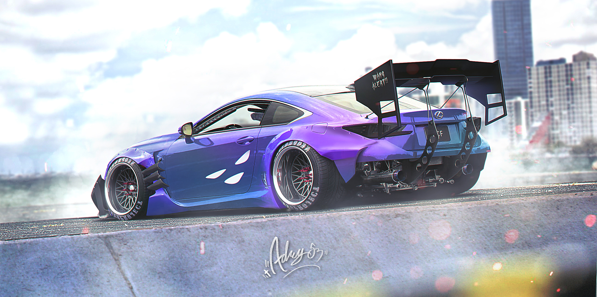
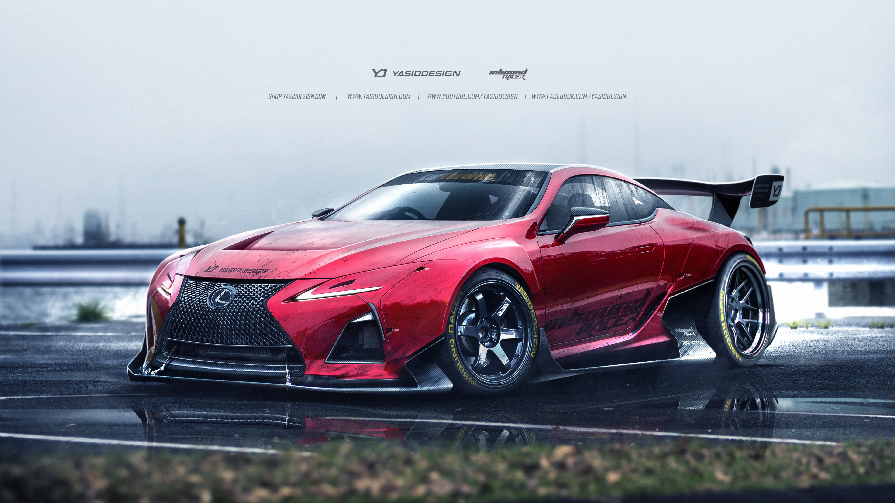

Каталог
Ключ к определению истинного спортивного автомобиля для всех разный. У каждого свой набор параметров, у каждой
свой вкус. Ты должен знать, что заявленная мощность не всегда означает спорткар, а спортивный дизайн и вовсе
тебе ничего не гарантирует. Прежде всег Текст взят с шикарного BroDude.ru о, спортивный автомобиль должен давать
удовольствие от вождения на скоростях, на него всегда приятно смотреть, и он излучает небольшую долю опасности,
что притягивает ещё больше. Спортивные машины, которые представлены тут – соответствуют всем этим критериям.
-

Lexus RC
Компактное купе, выпускаемое с середины 2014 года японским автопроизводителем
Lexus. RC является купе-версией 3 поколения Lexus IS и заменил в своём сегменте купе Lexus IS второго
поколения. Помимо обычного купе, выпускается также спортивная версия RC F.
-

Lamborghini Aventador
Суперкар, выпускавшийся компанией Lamborghini с 2011 по 2021 год. Aventador
пришёл на смену Lamborghini Murciélago и оснащался 6,5-литровым V-образным 12-цилиндровым двигателем
мощностью от 700 до 780 л. с. в зависимости от модификации. Дизайн был разработан Фелиппо Перини.
-

Lexus LC
Автомобиль класса Gran Turismo, выпускаемый с марта 2017 года компанией
Lexus, подразделением компании Toyota. Впервые был представлен на Североамериканском международном
автосалоне в 2016 году. Пришёл на смену Lexus SC, выпускавшемуся в 2001-2010 годах. Является первой
моделью компании Lexus на платформе GA-L на базе агрегатов Lexus LS. Обозначение LC расшифровывается как
Luxury Coupe.